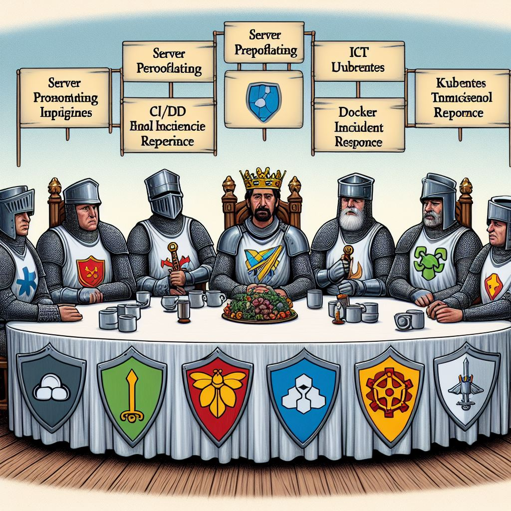

layout: true --- class: center <img src="https://raw.githubusercontent.com/snohio/devopsorlando/main/docs/assets/OrlandoDevOps2-04.png" width="680"> ## Open Source Saturday <br><br> #### An Orlando Devs Community Group ??? Notes: --- class: foo ## [Code of Conduct](https://orlandodevs.com/code-of-conduct/) > This code of conduct outlines our expectations for participants within the Orlando Devs community (relevant to both our Slack and Meetup), as well as steps to reporting unacceptable behavior. We are committed to providing a welcoming and inspiring community for all and expect our code of conduct to be honored. Anyone who violates this code of conduct may be banned from the community. ### Our open source community strives to: #### Be friendly and patient. #### Be welcoming: We strive to be a community that welcomes and supports people of all backgrounds and identities. #### Be considerate: Your actions (and words) affect users and colleagues, and you should take those consequences into account. Remember that we’re a very diverse community, so you might not be communicating in someone else’s primary language. #### Be respectful: Not all of us will agree all the time, but disagreement is no excuse for poor behavior and poor manners. It’s important to remember that a community where people feel uncomfortable or threatened is not a productive one. #### Be careful in the words that we choose: we are a community of professionals, and we conduct ourselves professionally. Be kind to others. Do not insult or put down other participants. Harassment and other exclusionary behavior aren’t acceptable. #### Try to understand why we disagree: Disagreements, both social and technical, happen all the time. It is important that we resolve disagreements and differing views constructively. ??? Notes: --- class: foo, center ### Thanks to our ODevs Sponsors **BlueWave Resource Partners: Recruitment, Staffing, Headhunting Agency** <br> <br> <img src="https://bluewaverp.com/wp-content/uploads/2023/02/BlueWave-Header-Logo-Transparent.svg" class="center" height="55" style="padding: 10px;background-color:rgb(33, 33, 33);border-radius: 10px;"> <br> <br> <br> **Informulate: Digital Products & Innovation Consulting** <br> <br> <img src="https://informulate.com/wp-content/uploads/2021/10/Informulate-Horizontal-Logo-and-Wordmark-and-Tagline.svg" class="center" height="55" style="padding: 10px"> <br> <br> <br> **Stax: The #1 Ranked Payment Processor** <br> <br> <img src="https://d9hhrg4mnvzow.cloudfront.net/get.staxpayments.com/ppc-payment-processing-lp/ed1b36a8-staxlogo-white-x_107o03u000000000000028.png" class="center" height="75" style="background-color:rgba(6,35,51,1);border-radius: 10px;"> ??? Notes: --- class: foo, center ### Thanks to our ODevs Sponsors **Envy Labs: Insightful Web Applications** <br> <br> <svg viewBox="0 0 350.7 69.8" class="center" height="75"> <path d="M70.2,29.9C68,14.4,55.8,2.2,40.3,0v29.9H70.2z M0,34.9c0,17.5,12.9,32.4,30.2,34.9V0C12.9,2.5,0,17.4,0,34.9z M55.5,39.1c8.4,0,15.1,6.8,15.1,15.1s-6.8,15.1-15.1,15.1s-15.1-6.8-15.1-15.1S47.1,39.1,55.5,39.1z M114,22.4v8.4h14.6v6.9H114 v9.3h16.9v7.1h-25V15.4h24.9v7.1H114z M263.8,47.1v7.1h-25V15.4h8v31.7H263.8z M291.5,37.6v16.5h-7.3V52c-1.8,1.8-4.3,2.8-6.9,2.8 c-5.4,0-8.9-2.8-8.9-7.9c0-6,5-7.9,10.7-8.1l4.8-0.3v-1c0-2.7-1.1-4.2-3.5-4.2c-1.9-0.2-3.6,1.2-3.7,3.1c0,0.1,0,0.3,0,0.4l-7.6-0.3 c0-4.7,4.3-9.6,11.2-9.6C287.6,26.8,291.5,30.6,291.5,37.6z M279.9,43.6c-2.3,0.1-3.9,0.9-3.9,2.8c0,1.8,1.3,2.4,3.1,2.4 c2.8,0,4.8-1.5,4.8-4.4v-1.1L279.9,43.6z M304.4,29.7c1.4-1.6,4.1-2.9,7.5-2.9c7.6,0,13,5.5,13,14s-5.4,14-13,14 c-3.7,0-6.5-1.5-7.9-3.3v2.8h-7.1V13.9h7.6L304.4,29.7z M304.4,40.2v1.2c0,4.4,2.6,6.8,6.3,6.8s6.5-2.7,6.5-7.4s-2.7-7.5-6.5-7.5 S304.4,35.9,304.4,40.2L304.4,40.2z M350.3,35.5l-7.5,0.4c0.1-1.7-1.2-3.2-2.9-3.3c-0.2,0-0.3,0-0.5,0c-2,0-3.1,0.8-3.1,2.3 c0,1.9,2,2.1,5.2,3c5.3,1.4,9.1,3.1,9.1,7.9c0,5.5-4,8.9-11,8.9c-6.9,0-10.9-3.1-11.4-8.7l7.6-0.4c0.1,2,1.3,3.3,3.9,3.3 c2.1,0,3.4-0.9,3.4-2.4s-1-2.1-4.9-3.1c-5.7-1.5-9.5-2.7-9.5-8.1c0-5.1,4-8.5,10.7-8.5S349.8,30.5,350.3,35.5z M162,37.8v16.4h-7.6 V39.2c0-3.4-1.8-5.3-4.7-5.3s-5,2.2-5,5.4v14.9h-7.6V27.4h7.2v2.8c1.2-1.9,3.6-3.3,7.2-3.3C157.7,26.8,162,30.8,162,37.8z M175.5,54.2l-11.6-26.8h8.4l6.3,15.8l6.2-15.8h8.4l-11.6,26.8H175.5z M215.2,27.4L209,43.1l-6.3-15.8h-8.4l10.3,26.8 c0,0.1,0,0.3,0,0.4c-0.2,0.9-0.6,1.7-1.3,2.2c-1.3,1-3.1,1.3-4.7,0.9c-0.6-0.1-1.2-0.3-1.8-0.5v7.1l0.9,0.3c1.4,0.4,2.9,0.6,4.4,0.6 c1.7,0.1,3.5-0.4,4.9-1.4c1-0.7,1.8-1.7,2.5-2.7c1-1.6,1.9-3.3,2.6-5.1l0.7-1.8l10.7-26.8L215.2,27.4z"></path> </svg> <br> <br> <br> <b>Trova Search: Recruiting Services and hiring solutions</b> <br> <br> <img height="75" src="https://www.trovasearch.com/wp-content/uploads/2023/02/logo.png" srcset="https://www.trovasearch.com/wp-content/uploads/2023/02/logo.png 346w, https://www.trovasearch.com/wp-content/uploads/2023/02/logo-300x51.png 300w"> <br> <br> <br> <b>Patreon: Create What Excites You Most</b> <br> <br> <svg xmlns="http://www.w3.org/2000/svg" height="55" viewBox="0 0 436 476" style="background-color:rgb(0,0,0);fill:rgb(255,255,255);padding: 10px;border-radius: 10px"><path data-fill="1" d="M436 143c-.084-60.778-47.57-110.591-103.285-128.565C263.528-7.884 172.279-4.649 106.214 26.424 26.142 64.089.988 146.596.051 228.883c-.77 67.653 6.004 245.841 106.83 247.11 74.917.948 86.072-95.279 120.737-141.623 24.662-32.972 56.417-42.285 95.507-51.929C390.309 265.865 436.097 213.011 436 143Z"></path></svg> --- class: foo, center ### Thanks to our ODevs Sponsors **The Conduit: Orlando Coworking, Art Gallery, & Meeting Room Rental** <br> <br> <img height="55" style="background-color:rgb(10,10,10);padding: 10px;border-radius: 10px;" src="http://images.squarespace-cdn.com/content/v1/5db1d4281081073332eb9de7/1586557426786-QCOVNCH5CFUR3KZOUJXX/Credo_Conduit_Logo_Yellow_Logo_White_Type_%401000px.png?format=1500w"> <br> <br> <br> **Civo: Cloud Computing Services Reimagined** <br> <br> <img style="background-color: #163B5D;padding: 10px;border-radius: 10px" src="https://civo.com/assets/logo-28e013cd1630517ca866d2993d8e4258232006dcd30795774d54288396d69c8a.svg" height="55"> <br> <br> <br> **Thumbprint: Simplify and Amplify Your Branded Initiatives** <br> <br> <img height="75" src="https://thumbprint.com/wp-content/uploads/2024/04/tp_horizontal_fullcolor_RGB-1.png"> --- <img src="https://www.picpedia.org/handwriting/images/agenda.jpg" class="center" width="500"> <br> <pre> 10:00 am - Official Welcoming 10:15 am - Open Source Contribution Primer 10:45 am - Q & A 11:00 am - Let the Contributions Begin 12:00 pm - Vote on Lunch 3:00 pm - Contributions Stand Up 4:00 pm - Wrap up, Thank You, and Survey Link </pre> ??? NOTES: --- # What is OSS? ### What is Open Source? ### Why contribute? - Career benefits ## What is Open Source? ## Why Contribute to Open Source ??? NOTES: - What is Open Source? How is it important? - Minor history intro to open source - Software licenses - Why contribute to Open Source? Career benefits [Milan] & community building [Felipe] - Everything you do is public. Be careful - Might have to develop a thick skin - It's a learning process. Everyone makes mistakes - Experience contributing to Open Source: GitHub-example (??) [Milan] - Experience contributing to Open Source: Linux kernel [Felipe] - How to find a good first issue on a popular Github project: Kubernetes, OpenTofu - Showcasing examples of projects to contribute today: Azote, ??, ?? --- # What's it like to contribute to Open Source? ## GitHub ## Linux Kernel --- # Projects Piotr Miller - NWG Shell * https://nwg-piotr.github.io/nwg-shell/azote * https://github.com/nwg-piotr/azote ??? NOTES: --- # Searching for a good first issue ??? NOTES: --- # First projects ??? NOTES: --- # Q & A ### Let's get started ??? NOTES: --- class: center ## Contributions Stand Up  ??? NOTES: It is that time of our night where we will invite all of our guests on stage for you to ask your questions. Let's look at the Q&A. While we compile a few of those, let me start off with one that I wanted to ask everyone. * Where do you think DevOps / Cloud & Platform Engineering / SRE is heading * How do you see AI changing the jobs roles? * Are you seeing applicants using AI for their resume? * Tell me one thing everyone should do this weekend to make themselves a little more valuable on the market. --- class: foo, center <img src="../assets/odo-flyer-424.png" width="800"> --- class: center, thanks # Thank You <img src="https://the32789.com/wp-content/uploads/2020/11/the32789-Ravenous-Pig-0370-1600x1067.jpg" width="300"> --- class: center # Event Survey <img src="../assets/qr/0424-get-a-job-survey.png" alt="Get a Job Survey" width="500"> ??? On your way out the door, please scan this and take our short 60 second survey. And I'll see you at the Ravenous Pig!